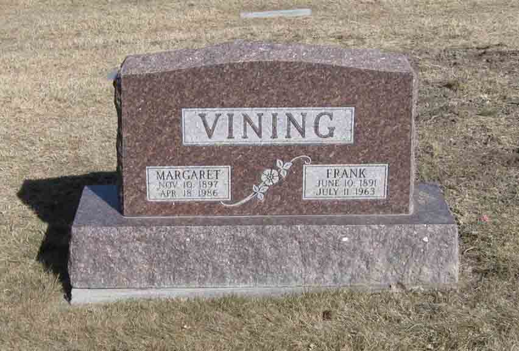
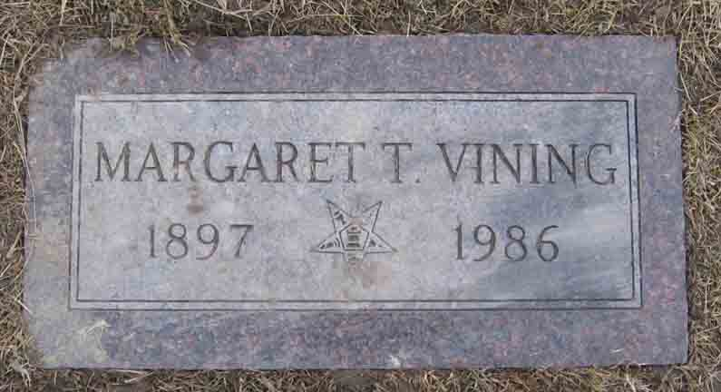
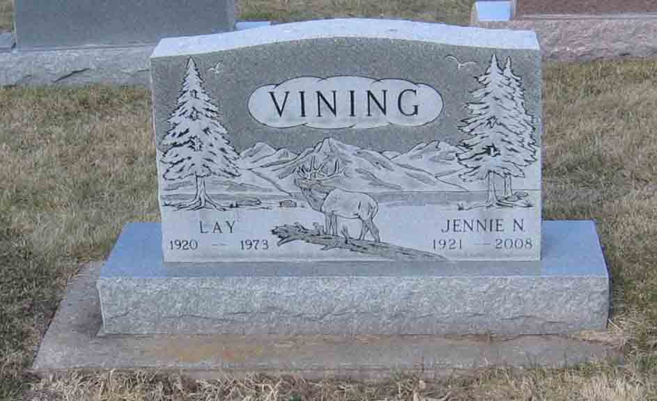

Documentation for Frank Lathan Vining - Margaret Todd
Census Data
| |
1930 |
1940 |
| Frank Lathan Vining |
37 |
48 |
| Margaret (Todd) Vining |
32 |
42 |
| Frank Lathan Vining Jr. |
9 |
19 |
| Marjorie Vining |
5 |
15 |
| Robert J. Vining |
4 |
14 |
| Dorothy Vining |
2 |
12 |
| Thomas Harry Vining |
|
10 |
1930 Great Falls, Cascade County, Montana - dwelling 80, family 86:

1940 Great Falls, Cascade County, Montana:

Death Data
Headstone for Frank Lathan Vining and Margaret (Todd) Vining, in Highland Cemetery, Great Falls, Cascade County, Montana (from Find A Grave):

Gravestone for Margaret (Todd) Vining, in Highland Cemetery, Great Falls, Cascade County, Montana (from Find A Grave):

Headstone for Frank Lathan Vining Jr. and Jennie N. ([…]) Vining, son and daughter-in-law of Frank Lathan Vining and Margaret (Todd) Vining, in Highland Cemetery, Great Falls, Cascade County, Montana (from Find A Grave):

Obituary (source unknown) for Robert J. Vining, son of Frank Lathan Vining and Margaret (Todd) Vining: